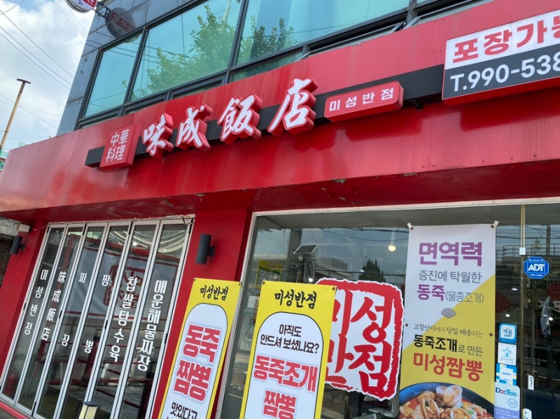
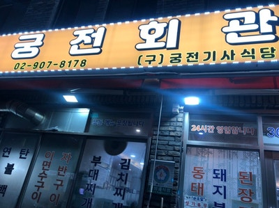
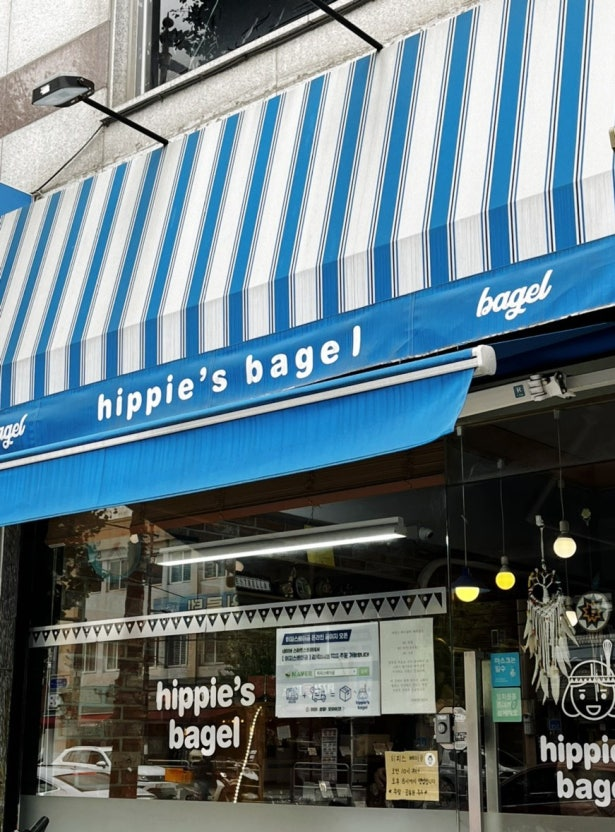
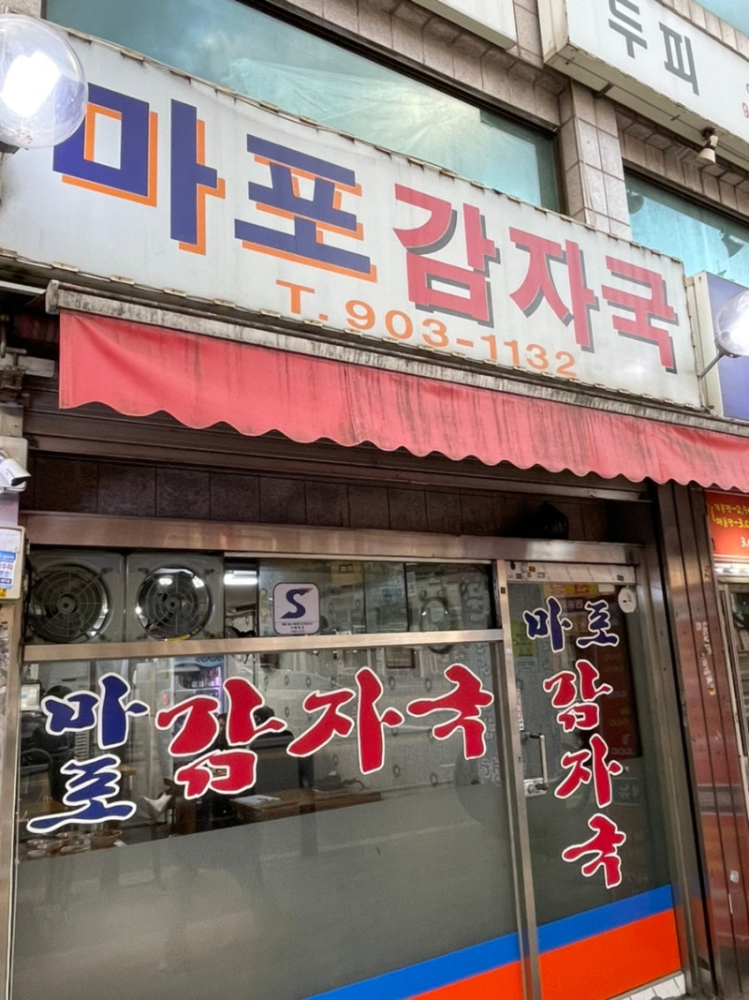

개요
덕성여자대학교는 서울 도봉구 삼양로144길 33에 있습니다.
주변에 맛있는 음식점이 많습니다. 다양한 음식을 경험해 보세요!
아래의 맛집 리스트는 다이닝코드에서 덕성여대 맛집으로 검색한 210곳에서 선정되었습니다.
덕성여대 맛집 목록
맛집 상세 정보
| 대표이미지 | 상호 | 구분 | 평점 | 위치 |
|---|---|---|---|---|
|  | 미성반점 | 짬뽕, 중국집 | 4.6 | 서울특별시 강북구 4.19로 37 |
 |
춘천막국수 | 막국수, 녹두전 | 4.4 | 서울특별시 강북구 삼양로141길 4-4 |
|  | 궁전회관 수유 | 한식, 갈비찜 | 4.5 | 서울특별시 강북구 도봉로87길 13 |
|  | 히피스베이글 덕성여대 | 베이글, 카페 | 4.7 | 서울특별시 도봉구 삼양로144길 21 |
|  | 마포감자국 수유 | 감자탕, 해장국 | 4.3 | 서울특별시 강북구 삼양로 162 |